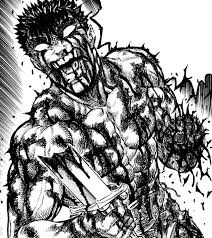
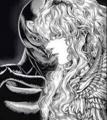
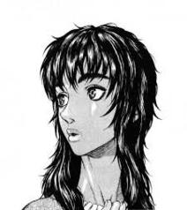
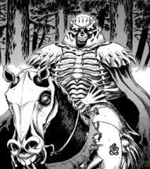
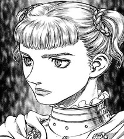
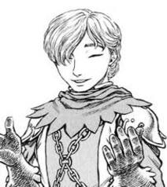
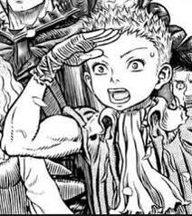

Εισαγωγή
Το Berserk είναι ένα επικό dark fantasy manga που δημιουργήθηκε από τον Kentaro Miura. Η ιστορία ακολουθεί τον Guts, έναν μοναχικό μισθοφόρο, και τη μάχη του ενάντια σε δαιμονικές δυνάμεις και την ίδια του την τύχη. Το manga ξεκίνησε τη δημοσίευσή του το 1989 και έχει αποκτήσει τεράστια δημοτικότητα παγκοσμίως.
Το Berserk είναι γνωστό για την σκοτεινή του ατμόσφαιρα, τις έντονες σκηνές βίας και την βαθιά συναισθηματική του αφήγηση. Ο κόσμος του Berserk είναι γεμάτος από φανταστικούς χαρακτήρες, θρησκείες, βασίλεια και μαγικές δυνάμεις.
Η πλοκή του Berserk περιστρέφεται γύρω από τις περιπέτειες του Guts, ενός πολεμιστή με τραγικό παρελθόν, και του Griffith, ενός χαρισματικού ηγέτη με φιλοδοξίες να κατακτήσει τον κόσμο. Η σχέση μεταξύ των δύο χαρακτήρων είναι κεντρικό στοιχείο της ιστορίας.
Χαρακτήρες
Guts
Ο Guts είναι ο πρωταγωνιστής της σειράς, γνωστός για την απίστευτη δύναμη και αντοχή του. Έχει περάσει από πολλές δυσκολίες και αγωνίζεται ενάντια σε δαιμονικές δυνάμεις.
Ο Guts είναι ένας μισθοφόρος με σκοτεινό παρελθόν, που αναζητά εκδίκηση ενάντια σε εκείνους που τον πρόδωσαν. Κρατά πάντα το τεράστιο σπαθί του, το Dragonslayer, και παλεύει με αδιάκοπη αποφασιστικότητα.
Griffith
Ο Griffith είναι ο χαρισματικός ηγέτης της Band of the Hawk, με φιλοδοξίες να αποκτήσει το δικό του βασίλειο. Η σχέση του με τον Guts είναι κεντρικό στοιχείο της ιστορίας.
Ο Griffith είναι ένας στρατηγός με απαράμιλλη ευφυΐα και ομορφιά. Έχει ένα όραμα για την κατάκτηση του κόσμου και χρησιμοποιεί κάθε μέσο για να επιτύχει τους στόχους του, ακόμα και αν αυτό σημαίνει να προδώσει τους κοντινούς του ανθρώπους.
Casca
Η Casca είναι ένα από τα κορυφαία μέλη της Band of the Hawk και σημαντικός χαρακτήρας στην ιστορία του Guts. Έχει περάσει πολλά και η σχέση της με τον Guts είναι περίπλοκη.
Η Casca είναι μια ισχυρή και αποφασιστική πολεμίστρια. Αρχικά είχε βαθύ σεβασμό και αφοσίωση στον Griffith, αλλά τα γεγονότα της ιστορίας την οδηγούν σε μια πολύπλοκη σχέση με τον Guts.
Skull Knight
Ο Skull Knight είναι ένας μυστηριώδης πολεμιστής που εμφανίζεται σε κρίσιμες στιγμές της ιστορίας. Έχει βαθιά γνώση των δαιμονικών δυνάμεων και προσπαθεί να καθοδηγήσει τον Guts.
Ο Skull Knight είναι ένας αρχαίος πολεμιστής που φαίνεται να γνωρίζει πολλά για το παρελθόν και το μέλλον του κόσμου του Berserk. Η παρουσία του είναι πάντα αινιγματική και φοβερή.
Farnese
Η Farnese είναι μέλος της Holy See και αρχηγός των Holy Iron Chain Knights. Αρχικά είναι εχθρός του Guts, αλλά αργότερα γίνεται σύμμαχος και φίλη του.
Η Farnese είναι μια θρησκευτική ζηλώτρια που αγωνίζεται να βρει τον δικό της δρόμο. Η συνάντησή της με τον Guts και την ομάδα του αλλάζει τη ζωή της και την οδηγεί σε εσωτερικές αναζητήσεις.
Serpico
Ο Serpico είναι ο θετός αδελφός της Farnese και πιστός της ακόλουθος. Είναι εξαιρετικός ξιφομάχος και παλεύει μαζί με τον Guts.
Ο Serpico είναι ένας ήρεμος και στρατηγικός πολεμιστής, που είναι πάντα δίπλα στη Farnese. Η αφοσίωσή του στην Farnese είναι αδιαμφισβήτητη, αλλά η συνάντησή του με τον Guts τον ωθεί να επανεξετάσει τις πεποιθήσεις του.
Puck
Ο Puck είναι ένα ξωτικό που γίνεται σύντροφος του Guts. Είναι μικρός σε μέγεθος αλλά με μεγάλη καρδιά και χιούμορ.
Ο Puck προσφέρει συχνά κωμικές στιγμές και ελαφρύνει την βαριά ατμόσφαιρα του Berserk. Είναι πιστός φίλος του Guts και τον βοηθά με τις μαγικές του ιδιότητες.
Isidro
Ο Isidro είναι ένας νεαρός κλέφτης που ονειρεύεται να γίνει μεγάλος πολεμιστής. Ακολουθεί τον Guts για να μάθει από αυτόν.
Ο Isidro είναι γεμάτος ενέργεια και θράσος. Αν και είναι άπειρος, έχει μεγάλη αποφασιστικότητα και θέληση να αποδείξει την αξία του.
Schierke
Η Schierke είναι μια νεαρή μάγισσα που γίνεται μέλος της ομάδας του Guts. Έχει βαθιά γνώση της μαγείας και των αρχαίων τελετουργιών.
Η Schierke είναι σοβαρή και ώριμη για την ηλικία της. Η μαγεία της είναι κρίσιμη για τις μάχες που δίνει η ομάδα του Guts.
Flora
Η Flora είναι η μέντορας της Schierke και μια από τις ισχυρότερες μάγισσες του κόσμου του Berserk. Ζει απομονωμένη στο δάσος.
Η Flora έχει βαθιά σοφία και κατανόηση της φύσης και της μαγείας. Οι συμβουλές της είναι πολύτιμες για την ομάδα του Guts.
Ιστορία
Η ιστορία του Berserk διαδραματίζεται σε έναν μεσαιωνικό φανταστικό κόσμο γεμάτο βία, πόλεμο και μαγεία. Ο Guts παλεύει για την επιβίωσή του και αναζητά εκδίκηση ενάντια σε δαιμονικές δυνάμεις που τον έχουν καταδιώξει από την παιδική του ηλικία.
Ο Guts γεννήθηκε από το σώμα μιας κρεμασμένης γυναίκας και μεγάλωσε ως μισθοφόρος. Συναντάει τον Griffith και γίνεται μέλος της Band of the Hawk. Η ιστορία εξελίσσεται με προδοσίες, μάχες και την αναζήτηση της εκδίκησης.
Η ιστορία χωρίζεται σε διάφορα arcs, κάθε ένα με τη δική του πλοκή και χαρακτήρες. Κεντρικό στοιχείο είναι η μάχη του Guts ενάντια στους Apostles, δαιμονικούς εχθρούς που έχουν καταστρέψει τη ζωή του.
Το Golden Age arc είναι το πρώτο μεγάλο arc του Berserk, το οποίο περιγράφει την άνοδο και την πτώση της Band of the Hawk, καθώς και την προδοσία του Griffith. Το Conviction arc ακολουθεί την αναζήτηση του Guts για εκδίκηση και τη συνάντησή του με νέους συμμάχους.
Το Millennium Falcon arc περιγράφει την επιστροφή του Griffith και την αναγέννηση της Band of the Hawk, καθώς και την συνεχιζόμενη μάχη του Guts ενάντια στους Apostles. Το Fantasia arc εξερευνά τον κόσμο της μαγείας και την αναζήτηση του Guts για έναν τρόπο να θεραπεύσει την Casca.
Κόσμος
Ο κόσμος του Berserk είναι γεμάτος φανταστικά τοπία, πόλεις, και βασίλεια. Υπάρχουν διάφορες φυλές, θρησκείες, και πολιτισμοί που συνθέτουν τον πλούσιο κόσμο του manga.
Μερικές από τις σημαντικές τοποθεσίες περιλαμβάνουν το Midland, το Kushan Empire, και το Elfhelm. Κάθε τοποθεσία έχει τη δική της ιστορία και σημασία στην πλοκή του manga.
Το Midland είναι το κεντρικό βασίλειο της ιστορίας, όπου διαδραματίζονται πολλά από τα γεγονότα. Το Kushan Empire είναι ένας εχθρικός πολιτισμός με ισχυρούς πολεμιστές και μαγικές δυνάμεις.
Το Elfhelm είναι το σπίτι των ξωτικών και ένας τόπος μαγείας και ηρεμίας. Είναι ένας από τους λίγους τόπους στον κόσμο του Berserk που προσφέρει καταφύγιο από τη βία και το χάος.
Εκτός από αυτά τα βασίλεια, υπάρχουν και άλλες σημαντικές τοποθεσίες όπως η Tower of Conviction, ένα μέρος όπου διαδραματίζονται πολλές σκοτεινές και τρομακτικές σκηνές, και η Witches' Forest, όπου κατοικούν οι μάγισσες και οι σοφοί του κόσμου.
Θεματολογία
Το Berserk εξερευνά διάφορα θέματα, όπως η μοίρα, η εκδίκηση, η φιλία, και η ανθρώπινη φύση. Η ιστορία είναι γεμάτη με φιλοσοφικούς προβληματισμούς και βαθιά συναισθηματικά θέματα.
Η βία και η σκοτεινή ατμόσφαιρα είναι κεντρικά στοιχεία του manga. Παράλληλα, το Berserk προσφέρει στιγμές ελπίδας και ανθρωπιάς μέσα στην ατελείωτη πάλη του Guts.
Η μοίρα είναι ένα από τα κύρια θέματα του Berserk, με τους χαρακτήρες να αγωνίζονται να καθορίσουν το δικό τους πεπρωμένο. Η εκδίκηση είναι επίσης ένα σημαντικό θέμα, με τον Guts να αναζητά εκδίκηση ενάντια σε εκείνους που τον πρόδωσαν.
Η φιλία και η αφοσίωση είναι κεντρικά στοιχεία της ιστορίας, με τις σχέσεις μεταξύ των χαρακτήρων να είναι βαθιά και πολύπλοκες. Η ανθρώπινη φύση και οι ηθικές προκλήσεις που αντιμετωπίζουν οι χαρακτήρες είναι επίσης κεντρικά θέματα του Berserk.
Επιπλέον, το Berserk εξερευνά την έννοια της θυσίας και τις συνέπειες των πράξεων των χαρακτήρων. Οι αποφάσεις που λαμβάνουν οι χαρακτήρες και οι θυσίες που κάνουν έχουν βαθύ αντίκτυπο στην πλοκή και την ανάπτυξή τους.
Συγγραφέας
Ο Kentaro Miura ήταν ένας από τους πιο επιδραστικούς δημιουργούς manga του 20ου και 21ου αιώνα. Η δουλειά του στο Berserk έχει εμπνεύσει αμέτρητους καλλιτέχνες και συγγραφείς.
Ο Miura ξεκίνησε την καριέρα του στο manga από νεαρή ηλικία και αφιέρωσε πάνω από τρεις δεκαετίες στη δημιουργία του Berserk. Το έργο του είναι γνωστό για την λεπτομερή τέχνη και την περίπλοκη πλοκή του.
Εκτός από το Berserk, ο Miura εργάστηκε σε διάφορα άλλα έργα, αλλά το Berserk παραμένει το πιο γνωστό και αγαπημένο του έργο. Η επιρροή του στο χώρο του manga και της φαντασίας είναι αδιαμφισβήτητη.
Ο Miura συνέχισε να εργάζεται στο Berserk μέχρι τον θάνατό του το 2021. Η κληρονομιά του ζει μέσα από το έργο του και την επιρροή που είχε στους αναγνώστες και τους δημιουργούς manga παγκοσμίως.
Η τέχνη του Miura είναι γνωστή για την απίστευτη λεπτομέρεια και την ικανότητά του να δημιουργεί έντονες και συγκινητικές σκηνές. Η ικανότητά του να συνδυάζει φαντασία, τρόμο και φιλοσοφία τον καθιστά έναν από τους πιο αξιόλογους δημιουργούς manga.
Gallery







Διασκευές
Το Berserk έχει διασκευαστεί σε διάφορες μορφές, όπως anime, ταινίες, και βιντεοπαιχνίδια. Οι διασκευές αυτές έχουν βοηθήσει να αυξηθεί η δημοτικότητα του manga και να φτάσει σε ένα ευρύτερο κοινό.
Η πρώτη anime σειρά κυκλοφόρησε το 1997 και κάλυψε το Golden Age arc. Ακολούθησαν οι ταινίες Berserk: The Golden Age Arc, και μια νέα anime σειρά που ξεκίνησε το 2016.
Οι διασκευές του Berserk έχουν λάβει μικτές κριτικές. Ενώ πολλοί εκτιμούν την προσπάθεια να μεταφερθεί η ιστορία σε άλλα μέσα, άλλοι πιστεύουν ότι οι διασκευές δεν καταφέρνουν να αποδώσουν πλήρως την πολυπλοκότητα και την ένταση του manga.
Εκτός από τις anime σειρές και ταινίες, το Berserk έχει εμπνεύσει και πολλά βιντεοπαιχνίδια. Τα παιχνίδια αυτά επιτρέπουν στους παίκτες να ζήσουν τις περιπέτειες του Guts και να πολεμήσουν ενάντια στους δαιμονικούς εχθρούς του.
Επιρροή
Το Berserk έχει επηρεάσει πολλούς καλλιτέχνες και δημιουργούς σε διάφορα μέσα. Η σκοτεινή ατμόσφαιρα και η επική αφήγηση του manga έχουν γίνει πρότυπο για πολλά άλλα έργα.
Πολλοί δημιουργοί video games, όπως οι δημιουργοί του Dark Souls, έχουν αναφέρει το Berserk ως πηγή έμπνευσης για τα έργα τους. Η επιρροή του manga είναι εμφανής σε διάφορες ταινίες, σειρές, και άλλα manga.
Η σκοτεινή και βίαιη ατμόσφαιρα του Berserk έχει εμπνεύσει πολλές άλλες ιστορίες φαντασίας. Η επιρροή του φαίνεται σε έργα που εξερευνούν θέματα όπως η εκδίκηση, η προδοσία, και η ανθρώπινη φύση.
Η αφήγηση του Berserk, με την πολυπλοκότητα των χαρακτήρων και την βαθιά συναισθηματική του αφήγηση, έχει επηρεάσει πολλούς συγγραφείς και καλλιτέχνες. Το έργο του Miura συνεχίζει να είναι πηγή έμπνευσης για νέες γενιές δημιουργών.
Κριτικές
Το Berserk έχει λάβει εξαιρετικές κριτικές για την τέχνη, την πλοκή, και τη θεματολογία του. Οι αναγνώστες και οι κριτικοί έχουν επαινέσει το βάθος των χαρακτήρων και την ένταση της ιστορίας.
Παράλληλα, το manga έχει επικριθεί για τη βία και τα σκοτεινά του θέματα. Ωστόσο, πολλοί θεωρούν ότι αυτά τα στοιχεία είναι απαραίτητα για την αυθεντικότητα και την ένταση της ιστορίας.
Οι κριτικές για το Berserk συχνά επαινούν την λεπτομερή τέχνη του Miura και την ικανότητά του να δημιουργεί έντονες και συγκινητικές σκηνές. Οι χαρακτήρες του Berserk θεωρούνται από τους πιο πολύπλοκους και βαθιά αναπτυγμένους στο χώρο του manga.
Εκτός από τις κριτικές για την τέχνη και την πλοκή, το Berserk έχει επαινεθεί και για την εξερεύνηση φιλοσοφικών και ηθικών θεμάτων. Η ιστορία του Guts και η πάλη του ενάντια στο πεπρωμένο του έχουν συγκινήσει πολλούς αναγνώστες.
Συχνές Ερωτήσεις
Ποιος είναι ο Guts;
Ο Guts είναι ο πρωταγωνιστής του Berserk. Είναι ένας μοναχικός μισθοφόρος που αναζητά εκδίκηση ενάντια σε δαιμονικές δυνάμεις που έχουν καταστρέψει τη ζωή του.
Τι είναι η Band of the Hawk;
Η Band of the Hawk είναι μια ομάδα μισθοφόρων που ηγείται ο Griffith. Ο Guts γίνεται μέλος της ομάδας και οι περιπέτειές τους αποτελούν κεντρικό στοιχείο της ιστορίας του Berserk.
Ποιος είναι ο Kentaro Miura;
Ο Kentaro Miura είναι ο δημιουργός του Berserk. Ήταν ένας από τους πιο επιδραστικούς δημιουργούς manga και αφιέρωσε πάνω από τρεις δεκαετίες στη δημιουργία του Berserk.
Υπάρχουν διασκευές του Berserk;
Ναι, το Berserk έχει διασκευαστεί σε anime, ταινίες, και βιντεοπαιχνίδια. Οι διασκευές αυτές έχουν βοηθήσει να αυξηθεί η δημοτικότητα του manga και να φτάσει σε ένα ευρύτερο κοινό.
Ποια είναι η σχέση μεταξύ του Guts και του Griffith;
Η σχέση μεταξύ του Guts και του Griffith είναι κεντρικό στοιχείο της ιστορίας του Berserk. Αρχικά είναι φίλοι και σύμμαχοι, αλλά η προδοσία του Griffith οδηγεί τον Guts σε μια πορεία εκδίκησης.
Είναι το Berserk κατάλληλο για όλους τους αναγνώστες;
Το Berserk περιέχει έντονη βία, σκοτεινά θέματα και γραφικές σκηνές, και ως εκ τούτου δεν είναι κατάλληλο για όλους τους αναγνώστες. Συνιστάται για ενήλικες και ώριμους αναγνώστες.
Ποια είναι η σημασία του Dragonslayer στο Berserk;
Το Dragonslayer είναι το τεράστιο σπαθί του Guts και ένα από τα πιο εμβληματικά όπλα του manga. Συμβολίζει την αποφασιστικότητα και τη δύναμη του Guts.
Ποια είναι τα κύρια arcs του Berserk;
Τα κύρια arcs του Berserk περιλαμβάνουν το Golden Age arc, το Conviction arc, το Millennium Falcon arc, και το Fantasia arc. Κάθε arc εξερευνά διαφορετικές πτυχές της ιστορίας και των χαρακτήρων.
Τι είναι οι Apostles στο Berserk;
Οι Apostles είναι δαιμονικοί εχθροί που έχουν κάνει σύμβαση με τις σκοτεινές δυνάμεις του God Hand. Είναι από τους κύριους ανταγωνιστές του Guts.
Ποιος είναι ο Skull Knight;
Ο Skull Knight είναι ένας μυστηριώδης πολεμιστής που εμφανίζεται σε κρίσιμες στιγμές της ιστορίας. Έχει βαθιά γνώση των δαιμονικών δυνάμεων και προσπαθεί να καθοδηγήσει τον Guts.
Πώς επηρέασε το Berserk το χώρο του manga και της φαντασίας;
Το Berserk έχει επηρεάσει πολλούς καλλιτέχνες και δημιουργούς με την σκοτεινή του ατμόσφαιρα, την επική αφήγηση και τους πολύπλοκους χαρακτήρες του. Η επιρροή του φαίνεται σε πολλά άλλα έργα φαντασίας και manga.